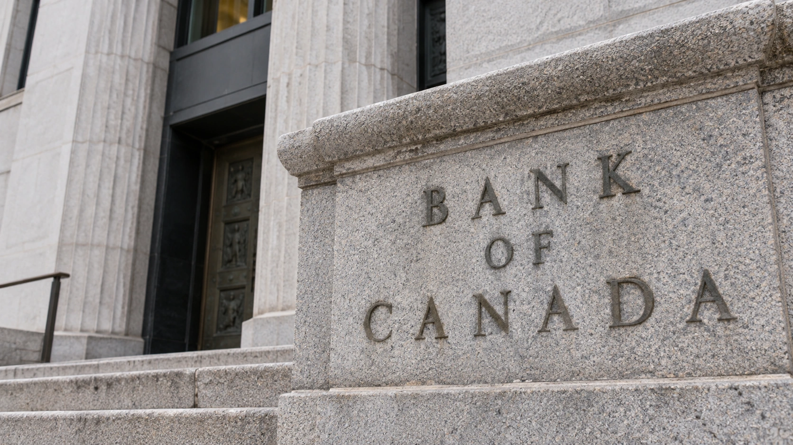

Bank of Canada Raises Rates as Energy Inflation Threatens to Spread
The first increase since July 2023 lifts the policy rate by 25 basis points. Policymakers say further increases remain possible as energy costs persist.

The Bank of Canada raised its policy interest rate to 2.5% on Wednesday, acting against the risk that persistently expensive energy will push inflation into a wider range of goods and services. The quarter-percentage-point increase was its first since July 2023. Policymakers left open the possibility of further increases while stressing that decisions would depend on incoming developments.
The decision changes the cost of overnight money in Canada; it does not reset every household mortgage or business loan to the same rate. The effect reaches borrowers through lenders, market yields and contract terms. Readers comparing policy announcements across countries need to distinguish the central bank's target from the financing costs actually faced by households and companies.
For an American audience, the significance extends beyond a neighboring country's borrowing rates. The bank described strong U.S. demand, consumer spending and AI investment alongside higher global energy costs. Its decision illustrates the tension facing policymakers when activity remains resilient but an external price shock makes the route back to low inflation less certain.
The concern is persistence, not just the price of gasoline
In his published opening statement, Governor Tiff Macklem explained that the council considered both holding and raising the rate. The case for waiting included remaining economic slack, the effect of U.S. tariffs and inflation measures that were still relatively contained outside energy. Inflation excluding gasoline was 2.2% in September, while core measures remained close to 2%.
The case for acting rested on how long the energy shock could last. A business can initially absorb a more expensive fuel bill through a lower margin. If the increase persists, it may instead change delivery charges, product prices or contracts. TTN's explanation of second-round inflation describes why that transmission matters more for policy than one isolated jump at the pump.
The bank's announcement projects inflation of around 3.5% at the end of this year and an average of 3% in 2027, before a return to 2% around the middle of 2028. Those are forecasts, not observed future readings. They also depend on assumptions about the Middle East conflict and the extent to which businesses pass higher costs to customers.
Better growth gives policymakers room to respond
The bank expects Canada's economy to grow 1% in 2026 and 2% in both 2027 and 2028. It described stronger activity through the middle of this year, supported by investment and exports, while expecting new U.S. tariffs to slow growth in the fourth quarter. The forecast therefore combines a better overall outlook with a near-term trade obstacle.
This is a difficult combination for interest-rate policy. Higher rates cannot create additional oil supply or remove a tariff. They can restrain demand and influence financing conditions, which may limit the ability of rising costs to become sustained price increases. The tradeoff is that tighter conditions also affect businesses and households that did not cause the original shock.
Our guide to diverging central-bank policies explains why a Canadian decision does not mechanically predict the next Federal Reserve move. Domestic inflation, spare capacity, trade exposure and the starting level of rates differ. A common energy shock can produce different policy responses without either bank following the other's timetable.
The next decision remains conditional
The next scheduled rate announcement is December 9. The council said additional increases could be needed, while emphasizing caution because uncertainty remains high. That wording preserves an option; it is not a commitment to raise rates at every meeting or to reach a particular level on a specified date.
For investors, the useful evidence between meetings will include whether energy pressure spreads, whether demand remains resilient and how trade restrictions affect activity. Our bond-duration guide explains how changing rate expectations can alter existing bond prices before a policy meeting occurs. Wednesday's action makes that expectations process more consequential, while leaving the scale and timing of any further tightening unresolved.
Sources and methodology
Sources checked October 28, 2026. Official decisions, company statements and reported findings are attributed in the text. Financial and operational implications are TTN editorial analysis.